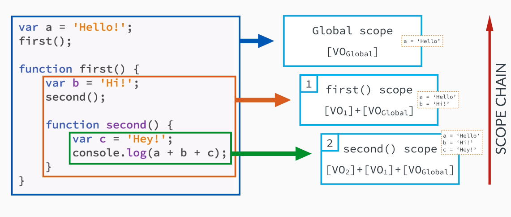

JavaScript
JavaScript Language Basics

What is JavaScript
- Lightweight
- Cross-platform
- Object-oriented
Primitive Data Types
| Type | Values |
| Undefined | undefined |
| Null | null |
| Number | -1, 0, 1.5, 5.7e+308, -Infinity, +Infinity, NaN |
| String | 'Ze', "Manel" |
| Boolean | true, false |
Primitive Data Types

Dynamic Typing
var taxit = 15; // Number
taxit = 'great'; // now is a String
taxit = { members: 15, office: 'somewhere' } // Object
How to return the type of a value?
console.log(typeof taxit);
// result?
What if...
var hello = 'Hi';
var size = 15;
console.log(hello + ' ' + size);
Type Coercion
1 + 2 + '3'; // '33'
1 + '2' + 3; // '123'
1 + true + true + false; // 3
true + '1'; // 'true1'
1 + ''; / '1'
'5' * 3; // 15
'5' * false; // 0
2 / '2'; // 1
2 / 'a'; // NaN
2 + null + ''; // '2'
null + true; // 1
Type Coercion
Falsy Values
- false
- 0
- '' or ""
- null
- undefined
- NaN
Truthy Values
! Falsy ValuesObjects

Functions
Function Statement/Declarations
function add(num1, num2) {
return num1 + num2;
}
- A function statement declares a function
- They have a name
- Load before any code is executed (thanks to Hoisting)
- Use when you want to create a function on the global scope and make it available throughout your code
Functions
Function Expressions
var add = function(a1, b2) {
return a1 + b2;
};
add(1, 2); // 3 :-)
- The name may be ommitted, making that function "anonymous"
- Do not hoist.
- Use to avoid polluting the global scope. (e.g. IIFE)
add(1, 2); // BOOM! :-(
var add = function(a1, b2) {
return a1 + b2;
};
Functions
IIFE
(
function() {
var team = 'taxit';
}
)();
console.log(team); // undefined because it isn't available
Arrays
List-like objects
var arr = [ 'taxit', 12, true, { slb: 38 } ];
// arr = new Array('taxit', 12, true, { slb: 38 }); is ok
arr[0]; // 'taxit'
arr[1]; // 12
arr[2]; // true
arr[3]; // { slb : 38 }
arr.length; // 4
typeof arr; // ?
arr[9] = null;
arr.length; // ?
typeof arr[4]; // ?
Arrays
Queues & Stacks
|
|
Arrays
Functional Style
// apply a filter function to an array
var persons = [{ name: 'Rui', age: 43 }, { name: 'Pedro', age: 29 }];
var old = persons.filter(function(person) {
return person.age > 40;
});
// apply a transform function to an array, transforming each element
var numbers = [1, 4, 9];
var roots = numbers.map(Math.sqrt); // [1, 2, 3]
// reduce an array to one single value
var animals = ['cat', 'dog', 'fish'];
var letters = animals.reduce(function(sum, word) {
return sum + word.length;
}, 0); // 10
// code from Academia de Código
Arrays
Iteration
A classic for loop works, however, you can use a forEach (impossible to break early)
words.forEach(function(word) {
console.log(word + ' has ' + word.length + ' letters.');
});
How to copy an array?
var a = [1, 9, 0, 4];
var b = a;
a.push(38);
a = // ?
b = // ?
References
- Variables can hold the actual values of primitives types
- or references to objects
Images from Academia de Código
Challenge 1
Tip Calculator
Challenge 1: Tip Calculator
- functions
- arrays
"Source code"
Objects
- A collection of properties
- {key: value} pairs
- Everything that is not a primitive, is an Object
var obj = {
a: 'hi',
b: 42,
c: true
};
// or
var person = new Object();
person.name = ['Bruno Lage'];
person['age']: 43;
|
|
Objects
Methods
var obj = {
name: 'Bruno Lage',
birthYear: 1976,
calcAge: function(birthYear) {
this.age = 2019 - this.birthYear;
};
};
// or
var person = new Object();
person.name = ['Bruno Lage'];
person['age']: 43;
Challenge 2
BMI Calculator
Body Mass Index
Challenge 2: BMI Calculator
- Objects
- methods
"Source code"
JavaScript Behind the Scenes

How code is executed
The code
var hello = "Hello World!";
JavaScript Engine
Lexical Scope
"is based on where variables and blocks of scope are authored/declared, by you, at write time"
function foo(a) { // global scope
var b = a * 2; // foo scope (local scope)
function bar(c) { // bar scope (local scope)
console.log(a, b, c);
}
bar(b * 3);
}
foo(2); // ?
Hoisting

Variables and functions declarations are "moved" from where they appear in the flow of the code to the top of the code.
|
|
Hoisting
Chicken or the Egg?
var a = 2;
- For JavaScript there are 2 statements:
var = a; // (egg: declaration - compilation)
a = 2; // (chicken: assignment - execution phase)

Call Stack
Execution Context
and the
Execution Stack
- Execution contexts are environments where JavaScript code run.
- Image Execution Context like a box which store variables and which a piece of our code is evaluated and executed
Execution Context and the Execution Stack
- All JavaScript code runs within the scope of what is known as an Execution Context
- A global execution context (the default one) is created initially and pushed into the call stack
- Everytime a function is invoked a new execution context is created and pushed into the call stack Everytime a function returns its execution context is popped from the call stack
All the code that is not inside of any function is executed.
Everything declared in the global context, automatically gets attached to the window object (for browsers):
Everything declared in the global context, automatically gets attached to the window object (for browsers):
var ze = 1;
ze == window.ze // true
Execution Context
Execution Context: how exactly that happens?
|
Execution Context
Activation Object
|
|
Execution Context
Scope Chain
Execution Context
Execution Stack vs Scope Chain
Execution Context
The this keyword
Execution Context
The this keyword
- Regular function call: the this keyword points at the global object (window, in the browser). The default.
- Method call: the this keyword points to the object that is calling the method.
Execution Context
The this keyword in practice
Also presenting borrow methods
JavaScript makes it possible to use one object's method on a totally different object
var ze = {
name: 'Zé',
sayHi: function() {
console.log('Hi ' + this.name);
}
}
var to = {
name: 'Tó'
}
to.sayHi = ze.sayHi;
to.sayHi();
Closures
Closure is when a function is able to remember and access its lexical scope even when that function is executing outside its lexical scope.
A closure is a function which has access to the variable from another function’s scope. This is accomplished by creating a function inside a function. Of course, the outer function does not have access to the inner scope.
An inner function has always access to the variables and parameters of its outer function, even after the outer function has returned.
Closures
- Closure is nested function which has access to the outer scope
- After the outer function is returned, by keeping a reference to the inner function (the closures) we prevent the outer scope to be destroyed.
function buildName(name) {
var greeting = "Hello, " + name + "!";
var sayName = function() {
var welcome = greeting + " Welcome!";
console.log(greeting);
};
return sayName;
}
var sayMyName = buildName("John");
Closures
- Every call of the outer function creates a new closure
- Every call of the closure interacts with the same outer scope – which is persistent
- Closures can be utilized to emulate the concept of classes with public and private members (Module Pattern)
Closures
Closures

Closures
Closures
Closures
Closures
Closures
Challenge 3: Rewrite using the power of closures
Source codeClosure
One more thing
var funcs = [];
for (var i = 0; i < 3; i++) {
// push will create new execution context with reference to i
funcs.push(function() {
console.log(i);
});
}
funcs[0](); // ?
funcs[1](); // ?
funcs[2](); // ?
How to fix this?
Objects
Inheritance
and the
Prototype Chain
Objects
Almost everything is an object
Objects
Constructors and instances in JavaScript
A class blueprint is required in order to create as many objects as we want.
/* Constructor function for objects of type Person */
function Person(name, yearOfBirth, job) {
// property initialization code inside constructor function
this.name = name;
this.yearOfBirth = yearOfBirth;
this.job = job;
}
/* Instances */
var ze = new Person('Zé', 1993, 'teacher');
var maria = new Person('Maria', 1992, 'nurse');
Prototype
- An existing object can be used as a prototype for other objects
- Based on a delegation mechanism in which non existent properties are looked up in prototype objects
- Every JavaScript has a property prototype, which makes inheritance possible in JavaScript
- The prototype property is where we put methods and properties that we want other objects to inherite
Prototype Chain
- JavaScript is a prototype-base language
Prototype Property
function Person(name, yearOfBirth, job) {
this.name = name;
this.yearOfBirth = yearOfBirth;
this.job = job;
}
/* add method to prototype property that we want to inherite */
Person.prototype.calculateAge = function() {
console.log(2019 - this.yearOfBirth);
}
/* Instances */
var ze = new Person('Zé', 1993, 'teacher');
var maria = new Person('Maria', 1992, 'nurse');
ze.calculateAge();
maria.calculateAge();
Asynchronous JavaScript
Callback functions
- A function is called a Callback when it is passed as an argument to another function for later execution
- Callbacks can be invoked:
// synchronous callback
function isOdd(num) {
return num % 2;
}
var numbers = [1, 5, 8, 19, 232, 456];
var oddNumbers = numbers.filter(isOdd);
// asynchronous callback
function ring() {
console.log('RING!');
}
setInterval(ring, 1000);
An example
| Synchronous | Asynchronous |
|
|
Concurrency
Concurrency
JavaScript is a:- single threaded
- concurrent
- non-blocking
- asychronous
programming language.
Concurrency Model
JavaScript has a concurrency model based on an event loop.
This model is quite different from models in other languages like C and Java where concurrency is acheived mainly via parallel code execution using threads
Support Material
Concurrency Model: Event Loop
- "What the heck is the event loop anyway?" (26min) - Philip Roberts
- The JavaScript Event Loop Explained - Erin Swenson-Healey
- Understanding the JavaScript Concurrency Model - Rafael Bicalho
Callback Hell
Source code
Promises
Promises
- Object that keeps track about whether a certain event has happened already or not
- An abstraction built on top of callbacks that gives us back functional composition and error bubbling in the async world
- A Promise object represents the eventual completion (or failure) of an asynchronous operation and its resulting value
Promises States
Promises
ExamplePromises
- Promise constructor takes only 1 argument, a callback function
- Callback function takes 2 arguments, resolve and reject
- Perform operations inside the callback function and if everything went well then call resolve
- If desired operations do not go well then call reject
Promises Consumers
- .then() is invoked when a promise is either resolved or rejected
- .catch() is invoked when a promise is either rejected or some error has occured in execution
Async/Await
ES6 feature
Next Generation JavaScript: ES6/ES2015